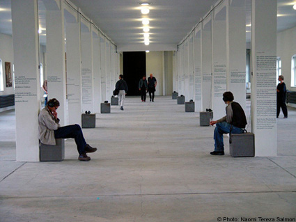
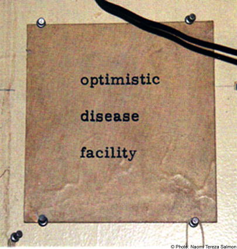

|

"optimistic I disease I facility", 2003. Boris Lurie. New York – Buchenwald Born in St. Petersburg in 1924 and grown up there, the cofounder of the “No!art”, Boris Lurie, occupies a special status among the artists, who survived the German concentration camps. His partly provoking pictures, collages and objects meet growing international interest. Not only do they help to recollect the Nazi horrors, but at the same time they have their mass-cultural, voyeuristic review and their utilization as their theme. Lurie never saw himself as a member of the “victim artists”, but as part of a special New York underground, critical of society, being interlinked in a cosmopolitan way. Wolf Vostel or Günther Brus have been some of his European friends and accomplices, both in their own ways. Boris Lurie consistently refused to accept the art market, if ever he consented exhibitions of his works. So he has become an artist for artists and is treated as a myth to a high degree, as well as he is newly discovered as an inside tip and a radical antidote to the sentimental, superficial, moralizing forms of the memory culture. Born in the time between Hitler and Stalin, his works are pioneering in showing the extreme experiences of the twentieth century. Not at last, this is a characteristic of his language-artistic works as well. Boris Lurie’s life and his body of work constitute a radical, sharp, and at the same time poetic complete work of art. Lurie so to speak inhabits his collages, and his experiences in the concentration camp shine through all his surroundings of civilization, as if they were threadbare fabrics. After a retrospective of his work in the art museum of the memorial Buchenwald in the year 1998/99, he gave way to the Israeli artist Naomi Tereza Salmon, living in Germany, to document his life and body of work completely, for the first time. The exhibition is a sign for an unconventional proof of trust as well as for their reciprocal artistic esteem and for a rare form of subtle co-operation. The multimedia exhibition, combining photographs, video, sound-installations, projections of poems and computer-based picture sequences, is presented at the lately restored third floor of the former stock chamber of the concentration camp Buchenwald. The exhibition is based on two preparatory visits at New York and the ongoing dialogue between Naomi Tereza Salmon and Lurie, originating from their encounters.  optimistic I disease I facility Video documentation about Boris Lurie The life and work of Boris Lurie creates a radical, brusque, and at the same time a poetic cosmos. In New York where Lurie lives within his collages, the experience of the Nazi concentration camps seeps through everything. Apartment studio and laboratory all reflect a very personal artistic view of the past which surrounds him in the present. After meeting the artist Naomi Tereza Salmon (who lives and works in Germany), at Buchenwald during the retrospective exhibition of his works in 1998/99, he gave her permission to document his apartment, studio and storage space. A dialogue developed, covering a range of issues, mainly about the past, about living in New York, about the Palestinian issue, including discussions on Stalin and capitalism. The film is a result of this encounter, laconically trying to capture the authentic situation, and was made as a low budget project. Considering the fact that Lurie is the founder of the No!art movement, the making of the film is inspired by its manifest, which presents an opposition to American mass culture and to the commercializing process of art, putting in question the scene of mainstream and pop art, creating a genuine ideological and fundamental aesthetic approach of its own. The music, which was composed specifically for this purpose by the German music and internet performer Jan Brüggemeier (pingfm - internet radio broadcasting), serves as an adhesive as well as an interpretative component. An examination of the metaphysical space, focusing on the encounter between the two artists and the experiences of each of them with their immediate surrounding takes place. The film offers no answers but presents the questions which arise in it in a clear way for the viewer to reflect on them. 58 Min. Germany 2003 Click here to view the film. Boris Lurie reads "Die Kalte Luft" Audio Sequence, .mp3 format Close Window All content copyright 2006 Naomi Tereza Salmon - all rights reserved |